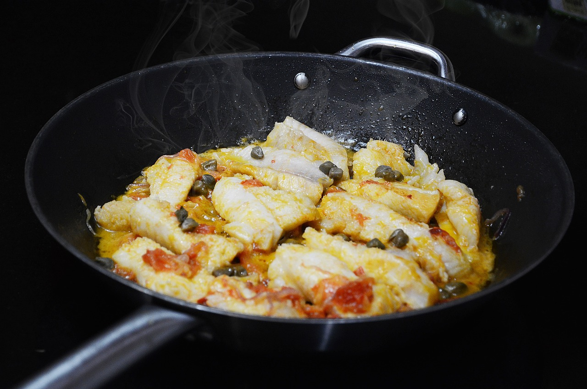

Gusseisen vs. beschichtet - Welche Pfanne ist besser?
Gusseisen-Pfannen und beschichtete Pfannen sind zwei beliebte Arten von Kochgeschirr, die jeweils ihre eigenen Vor- und Nachteile bieten. Beim Vergleich der beiden Materialien spielen verschiedene Faktoren eine Rolle.
Gusseisen-Pfannen:
Vorteile:
- Hervorragende Wärmeleitung: Gusseisen speichert und leitet Wärme effizient, was zu gleichmäßiger Erhitzung führt.
- Langlebigkeit: Gusseisen-Pfannen sind bekannt für ihre Robustheit und können über Generationen hinweg genutzt werden.
- Vielseitigkeit: Sie sind ideal zum Braten, Braten, Schmoren und sogar zum Backen.
Nachteile:
- Gewicht: Gusseisen-Pfannen sind schwerer im Vergleich zu beschichteten Pfannen, was für einige Benutzer möglicherweise unpraktisch ist.
- Pflegeaufwand: Sie erfordern eine spezielle Pflege, einschließlich Einbrennen und Handwäsche, um Rostbildung zu verhindern.
Beschichtete Pfannen:
Vorteile:
- Antihaft-Eigenschaften: Beschichtete Pfannen ermöglichen das Kochen ohne oder mit minimalem Einsatz von Fett, da Lebensmittel weniger dazu neigen, an der Oberfläche zu haften.
- Leichtgewicht: Im Vergleich zu Gusseisen-Pfannen sind beschichtete Pfannen leichter und daher leichter zu handhaben.
- Einfache Reinigung: Die Antihaft-Beschichtung erleichtert die Reinigung, da Lebensmittelreste weniger anhaften.
Nachteile:
- Begrenzte Haltbarkeit: Die Beschichtung kann im Laufe der Zeit abnutzen, insbesondere bei unsachgemäßer Verwendung oder Verwendung von metallischen Kochutensilien.
- Empfindlichkeit: Beschichtete Pfannen können empfindlicher gegenüber Kratzern und hohen Temperaturen sein.
Insgesamt hängt die Wahl zwischen einer Gusseisen-Pfanne und einer beschichteten Pfanne von persönlichen Vorlieben, Kochgewohnheiten und Pflegebereitschaft ab. Beide Optionen haben ihre eigenen Vorzüge und können je nach Anwendungsfall die optimale Wahl darstellen.